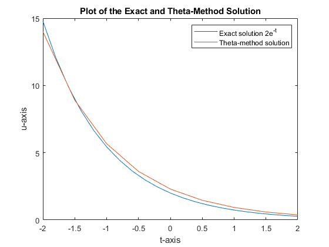
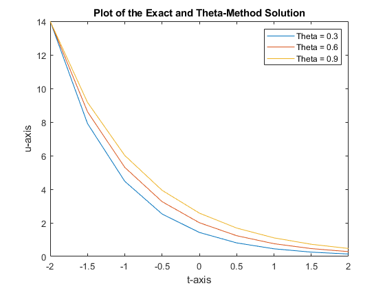
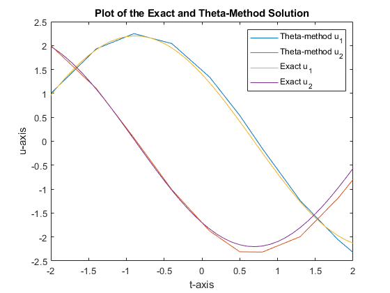
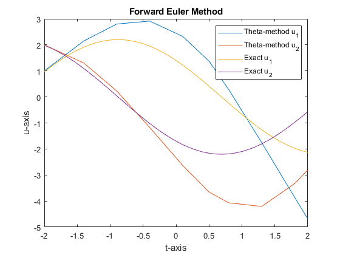
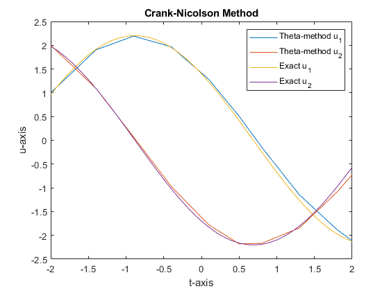
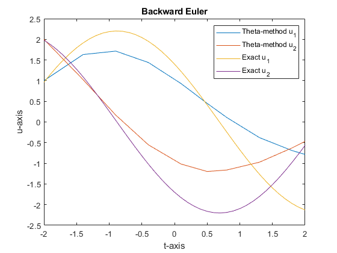
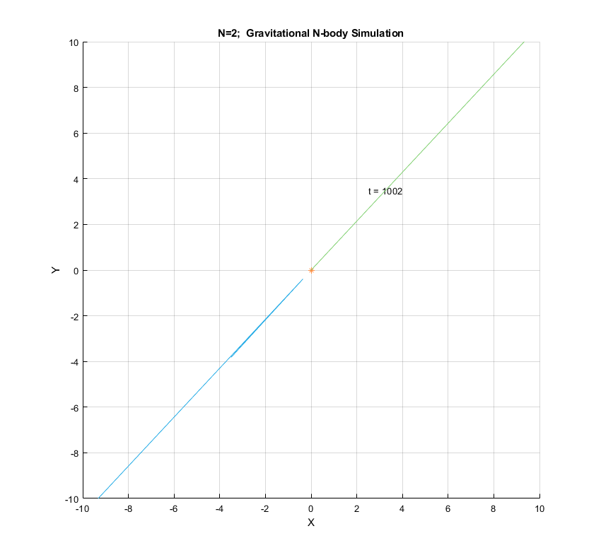
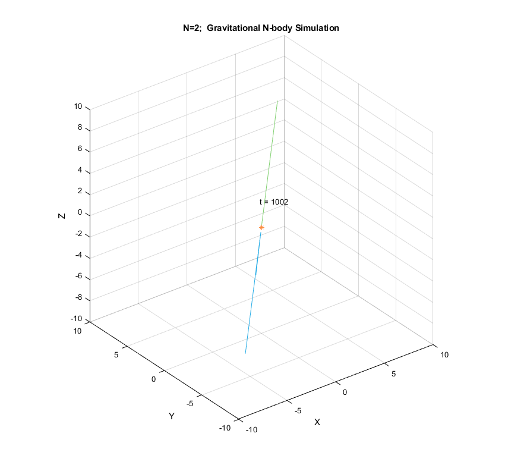

Contents
- Exercise 1 - Initial Value Problem for a System of Differential Equations
- EXERCISE 2 - Movement of the planets
- For the functioning of this project we have created three functions:
- Orbit between Jupiter and the Sun
- Orbits between Jupiter Saturn Uranus Neptune and the Sun
- Orbits between Jupiter Saturn and the Sun
- 2D and 3D
- Conclusion
- Exercise 3 - Solving Korteweg-de Vries equation.
% ASSIGNMENT 6 % Worked by David and Carmen
Exercise 1 - Initial Value Problem for a System of Differential Equations
Present two different problems that are solved with the theta-method for different values of theta, then compare the forward Euler, backward Euler and Crank-Nicolson methods.
PROBLEM 1
% Solve the initial value problem % u' = -u % u(-2) = 14 [T,U] = ODEsolve(@(t,u) -u,[-2,2],14,0.75,0.5) % Plot the numberical theta-method solution and the exact solution 2e^-t x = -2:0.2:2; plot(x,2*exp(-x),T,U); title("Plot of the Exact and Theta-Method Solution"); xlabel('t-axis'); ylabel('u-axis'); legend('Exact solution 2e^{-t}','Theta-method solution');
T =
-2.0000
-1.5000
-1.0000
-0.5000
0
0.5000
1.0000
1.5000
2.0000
U =
14.0000
8.9091
5.6694
3.6078
2.2959
1.4610
0.9297
0.5917
0.3765

% Solve the same initial value problem: % u' = -u % u(-2) = 14 % for values of theta 0.3,0.6, and 0.9 [T1,U1] = ODEsolve(@(t,u) -u,[-2,2],14,0.3,0.5) [T2,U2] = ODEsolve(@(t,u) -u,[-2,2],14,0.6,0.5) [T3,U3] = ODEsolve(@(t,u) -u,[-2,2],14,0.9,0.5) % Plot solutions for different theta values plot(T1,U1,T2,U2,T3,U3); title("Plot of the Exact and Theta-Method Solution"); xlabel('t-axis'); ylabel('u-axis'); legend('Theta = 0.3','Theta = 0.6','Theta = 0.9');
T1 =
-2.0000
-1.5000
-1.0000
-0.5000
0
0.5000
1.0000
1.5000
2.0000
U1 =
14.0000
7.9130
4.4726
2.5280
1.4289
0.8076
0.4565
0.2580
0.1458
T2 =
-2.0000
-1.5000
-1.0000
-0.5000
0
0.5000
1.0000
1.5000
2.0000
U2 =
14.0000
8.6154
5.3018
3.2626
2.0078
1.2356
0.7603
0.4679
0.2879
T3 =
-2.0000
-1.5000
-1.0000
-0.5000
0
0.5000
1.0000
1.5000
2.0000
U3 =
14.0000
9.1724
6.0095
3.9373
2.5796
1.6901
1.1073
0.7255
0.4753

PROBLEM 2
% Solve the initial value problem % u'_1 = u_2 % u'_2 = -u_1 % u(0) = [1 2] % at given times [-2,-1.4,-0.9,-0.4,0.1,0.5,0.8,1.3,1.8,2] [T,U] = ODEsolve(@(t,u) [0 1; -1 0]*u,... [-2,-1.4,-0.9,-0.4,0.1,0.5,0.8,1.3,1.8,2],[1 2],0.45,0.5) % Plot the exact solution and the theta-method solution u1 = @(x) 1.4*cos(x) - 1.7*sin(x); u2 = @(x) -1.7*cos(x) - 1.4*sin(x); x = -2:0.1:2; plot(T,U(:,1),T,U(:,2),x,u1(x),x,u2(x)); title("Plot of the Exact and Theta-Method Solution"); xlabel('t-axis'); ylabel('u-axis'); legend('Theta-method u_1','Theta-method u_2','Exact u_1','Exact u_2');
T =
-2.0000
-1.4000
-0.9000
-0.4000
0.1000
0.5000
0.8000
1.3000
1.8000
2.0000
U =
1.0000 2.0000
1.9299 1.1063
2.2498 0.0694
2.0419 -1.0087
1.3432 -1.8725
0.5396 -2.3093
-0.1545 -2.3150
-1.2397 -1.9936
-2.0557 -1.1901
-2.3230 -0.7991

COMPARING FORWARD EULER, BACKWARD EULER AND CRANK-NICOLSON METHODS
Choose theta 0, 0.5 and 1 to compare precision of Forward Euler, Crank-Nicolson, and Backward Euler method, respectively. Observe that the solution from the Crank-Nicolson method is most precisely copying the exact solution.
FORWARD EULER METHOD
% Solving [T,U] = ODEsolve(@(t,u) [0 1; -1 0]*u,... [-2,-1.4,-0.9,-0.4,0.1,0.5,0.8,1.3,1.8,2],[1 2],0,0.5); % Plotting plot(T,U(:,1),T,U(:,2),x,u1(x),x,u2(x)); title("Forward Euler Method"); xlabel('t-axis'); ylabel('u-axis'); legend('Theta-method u_1','Theta-method u_2','Exact u_1','Exact u_2');

CRANK-NICOLSON METHOD
% Solving [T,U] = ODEsolve(@(t,u) [0 1; -1 0]*u,... [-2,-1.4,-0.9,-0.4,0.1,0.5,0.8,1.3,1.8,2],[1 2],0.5,0.5); % Plotting plot(T,U(:,1),T,U(:,2),x,u1(x),x,u2(x)); title("Crank-Nicolson Method"); xlabel('t-axis'); ylabel('u-axis'); legend('Theta-method u_1','Theta-method u_2','Exact u_1','Exact u_2');

BACKWARD EULER METHOD
% Solving [T,U] = ODEsolve(@(t,u) [0 1; -1 0]*u,... [-2,-1.4,-0.9,-0.4,0.1,0.5,0.8,1.3,1.8,2],[1 2],1,0.5); % Plotting plot(T,U(:,1),T,U(:,2),x,u1(x),x,u2(x)); title("Backward Euler"); xlabel('t-axis'); ylabel('u-axis'); legend('Theta-method u_1','Theta-method u_2','Exact u_1','Exact u_2');

EXERCISE 2 - Movement of the planets
% Clean paper clear all;clc;close all;
For the functioning of this project we have created three functions:
see nbody.m and nbody.html The fisrt one describes the forces between the masses with the help of descriptive differential equations. This differentials are then used.
% see distance.m and distance.html % To set this differentials correctly, I set up an external function that % gives the distance between masses. % see plotorbits.m and plotorbits.html %This function solves this differential equations with the ode45. Then %makes a video that of the trajectory of the planets described by the %solution of the ode45. % PHYSICS BEHIND DIFFERENTIAL EQUATIONS %In this problem the equations are described by the position, velocity and %accelearation. Firstly, we know that the velocity of masses is in reality %the difference in time of the position. The same relation follows with the %velocity and acceleration. Lastly, thanks to Newton, we have that the %sum of all the forces is equal to m*a and that in this case %F = -Gm1m2/r^2. Where r is the distance between two planets. Of course %this formula can also be applied when we talk about multiple bodies, not %just two.
Orbit between Jupiter and the Sun
%In this assignment we calculate the orbit of Jupiter and the Sun (To make %it funner than earth) %We first define the initial conditions of both Jupiter and the Sun. %Naturally, to make matters more simpler we say the sun has mass 1 put %everything else in terms of that. %Number of objects N=2; %Masses of the planets m = [0.000954786104043 ; 1]; %Initial positions from planets at XYZ axes X = [-3.5023653; 0]; Y = [-3.8169847; 0]; Z = [-1.5507963; 0]; %Initial velocities of planets at XYZ axes vx = [0.00565429 ;0]; vy = [-0.00412490 ;0]; vz = [-0.00190589; 0]; %First we take a look at the orbits in 2D plotorbits(N,m,X,Y,Z,vx,vy,vz,2);
Warning: The value of local variables may have been changed to match the globals. Future versions of MATLAB will require that you declare a variable to be global before you use that variable.

%Secondly, we look at this scenario in 3D %Number of objects N=2; %Masses of the planets m = [0.000954786104043 ; 1]; %Initial positions from planets at XYZ axes X = [-3.5023653; 0]; Y = [-3.8169847; 0]; Z = [-1.5507963; 0]; %Initial velocities of planets at XYZ axes vx = [0.00565429 ;0]; vy = [-0.00412490 ;0]; vz = [-0.00190589; 0]; plotorbits(N,m,X,Y,Z,vx,vy,vz,3);
Warning: The value of local variables may have been changed to match the globals. Future versions of MATLAB will require that you declare a variable to be global before you use that variable.

Orbits between Jupiter Saturn Uranus Neptune and the Sun
%Now we add the planet Saturn Uranus and Neptune. %So we update our input in the following maner: N = 5; %Masses of the planets m = [ 0.0000517759138449; 0.0000437273164546; 0.000285583733151 ; 0.000954786104043 ; 1]; %Initial positions from planets at XYZ axes X = [11.4707666; 8.3101420; 9.0755314; -3.5023653; 0]; Y = [-25.7294829; -16.2901086; -3.0458353; -3.8169847; 0]; Z = [-10.8169456; -7.2521278; -1.6483708; -1.5507963; 0]; %Initial velocities of planets at XYZ axes vx = [0.00288930; 0.00354178; 0.00168318; 0.00565429 ;0]; vy = [0.00114527; 0.00137102; 0.00483525; -0.00412490 ;0]; vz = [0.00039677; 0.00055029; 0.00192462; -0.00190589; 0]; plotorbits(N,m,X,Y,Z,vx,vy,vz,2);
Warning: The value of local variables may have been changed to match the globals. Future versions of MATLAB will require that you declare a variable to be global before you use that variable.
Index exceeds the number of array elements (2). Error in plotorbits (line 30) COM=sum(r(1:N,1:3).*m(1:N),1)/sum(m); % location of barycentre Error in driver (line 199) plotorbits(N,m,X,Y,Z,vx,vy,vz,2);
Orbits between Jupiter Saturn and the Sun
N = 3; %Masses of the planets m = [ 0.000285583733151 ; 0.000954786104043 ; 1]; %Initial positions from planets at XYZ axes X = [ 9.0755314; -3.5023653; 0]; Y = [ -3.0458353; -3.8169847; 0]; Z = [ -1.6483708; -1.5507963; 0]; %Initial velocities of planets at XYZ axes vx = [ 0.00168318; 0.00565429 ;0]; vy = [ 0.00483525; -0.00412490 ;0]; vz = [ 0.00192462; -0.00190589; 0]; plotorbits(N,m,X,Y,Z,vx,vy,vz,2); plotorbits(N,m,X,Y,Z,vx,vy,vz,3);
2D and 3D
% I choose to make the dimensions an input, such that we can choose at each % example with which dimensions to work with. % This is done with the help of view(dimension).
Conclusion
One of the problems of this code is that the timespan is not in accordance to each planet. Hence, it doenst plot exactly one orbit, but
%but more like a taugh approximation. %An important factor is that for large values of time, this orbits do not %converge and follow their own roots. This is due to some error in the %solving of this functions. Thus, the relevant values are the first %rotations. % Also, the orbits of the planets have an inclination that has not been % included in this code. % Nevertheless, the main idea of the assignment is portrayed.
Exercise 3 - Solving Korteweg-de Vries equation.
%see kvdsolver.m and kvdsolver.html % This code solves the Korteweg-de Vries eq. u_t+uu_x+u_xxx=0 % in the periodic interval on [-L,L] and initial condition given by % the following. % To solve the KdV equation, we must first set up an interval for which we % want to solve this differential equation of the form [-L,L]. Were the % length will be 2L. u0 = @(x) 1000/2 * (cosh(sqrt(1000)*x/2)).^(-2); [t,x,U] = kvdsolver(u0,1,10,4,11);